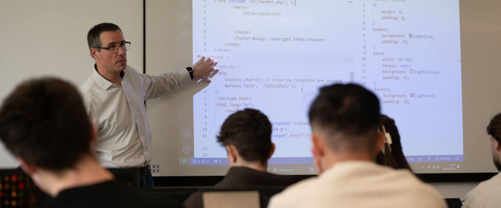

L'ÉQUIPE ENSEIGNANTE
Des enseignants qui
forgent la
nouvelle ère

Des enseignants qui
forgent la
nouvelle ère

Le laboratoire de recherche de l’Efrei, Grande École d’ingénieurs généraliste et numérique, imagine les technologies de demain pour répondre aux défis sociétaux. De l’intelligence artificielle à la cybersécurité, des réseaux de communication aux systèmes embarqués, nous innovons pour transformer la santé, l’éducation, les territoires et l’environnement. Depuis janvier 2022, l’école est un établissement composante de l’Université Paris-Panthéon-Assas, favorisant une recherche pluridisciplinaire entre numérique, droit, gestion, médias et écologie, notamment à travers la LegalTech.

Découvrez les thèses en cours du laboratoire
Découvrez les thèses encadrées par le laboratoire qui ont été soutenues
Le laboratoire regroupe 55 enseignants-chercheurs et 65 doctorants en plus d’accueillir de nombreux stagiaires de niveau ING2 et ING3 sur nos campus parisiens et bordelais. Les différents axes de la recherche viennent directement nourrir, au travers de cours et de projets, les enseignements dispensés dans la formation.